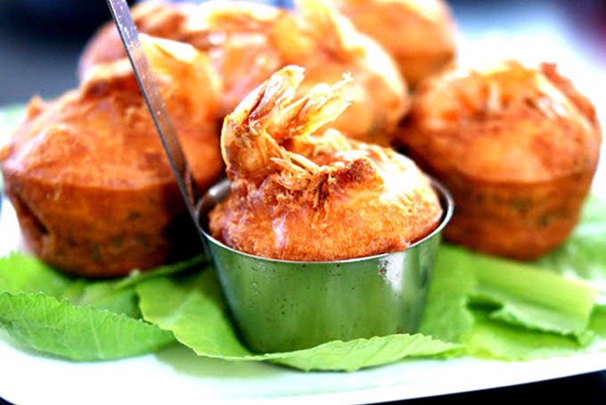

Thông tin về món ăn
Nguồn gốc
Bánh cống có nguồn gốc từ người Khmer Nam Bộ, đặc biệt là tỉnh Sóc Trăng, là món ăn đặc sản của vùng. Một giả thuyết khác cho rằng nó có thể có xuất xứ từ người Triều Châu (Trung Quốc), những người đã di cư đến Sóc Trăng và truyền lại cho người Khmer, sau đó món bánh này được biến đổi một chút trong quá trình giao lưu văn hóa. Tên gọi "bánh cống" xuất phát từ việc sử dụng khuôn hình trụ tròn giống chiếc cống để làm bánh.
Nguyên liệu chính
- Bột bánh: Bột gạo, nghệ, nước cốt dừa.
- Nhân: Tôm, thịt heo, đậu xanh.
- Gia vị: Nước mắm chua ngọt, tỏi, ớt, tiêu.
- Rau sống: Rau thơm, dưa leo và nước mắm chua ngọt.
Đặc điểm
- Hương vị: Giòn rụm, béo ngậy, thanh mát rau sống.
- Cách thưởng thức: Cuốn bánh cùng rau sống, chấm nước mắm.
- Trải nghiệm: Vị giòn, dai, béo, thơm, thanh mát.